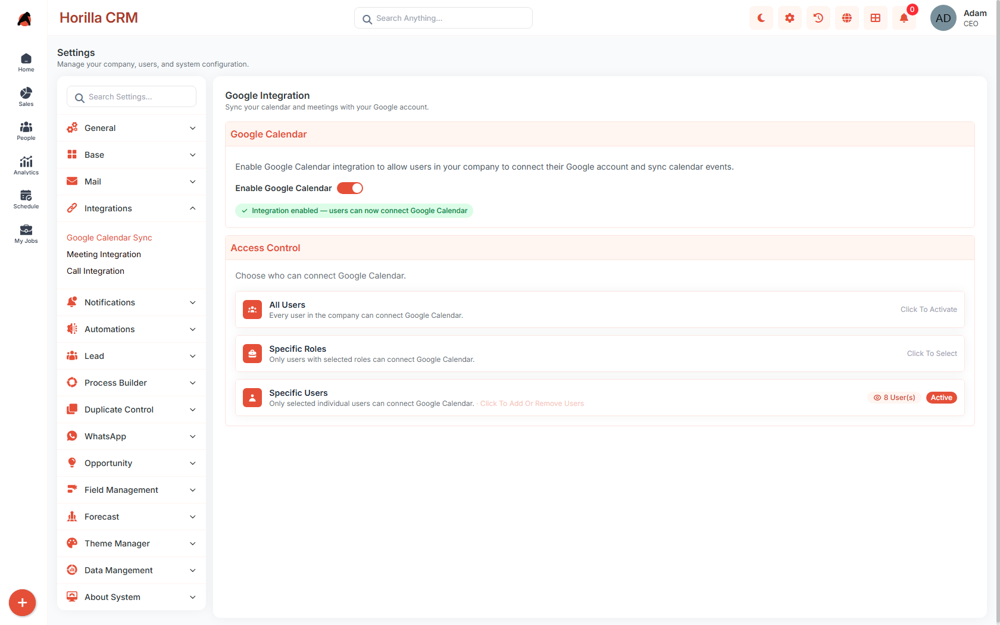

Google Calendar Sync
Go to Settings → Integrations → Google Calendar Sync. The page title
is Google Integration. The description is Sync your calendar and meetings
with your Google account.
The Google Calendar section reads Enable Google Calendar integration to
allow users in your company to connect their Google account and sync calendar events.
Enable Google Calendar is on, and the status reads Integration enabled —
users can now connect Google Calendar.
Access Control appears while the
switch is on. When the switch is off, the status reads Integration disabled — users cannot
connect Google Calendar
and Access Control is hidden.
Connecting an account, the sync direction and the webhook are on My Settings → Google Calendar.

Turning Enable Google Calendar off asks Disable Google Calendar
integration?
Confirming it permanently removes every user's connection and
credentials for the company.
Access Control
The section line is Choose who can connect Google Calendar.
Three cards set who may
connect. The card in use is marked Active.
- All Users — every user in the company can connect Google Calendar. The card shows Click To Activate while another option is active.
- Specific Roles — only users with the selected roles can connect Google Calendar. The card shows Click To Select. While this card is active it shows the role count and Click To Add Or Remove Roles.
- Specific Users — only the selected people can connect Google Calendar. This card is Active, with 8 User(s) and Click To Add Or Remove Users.